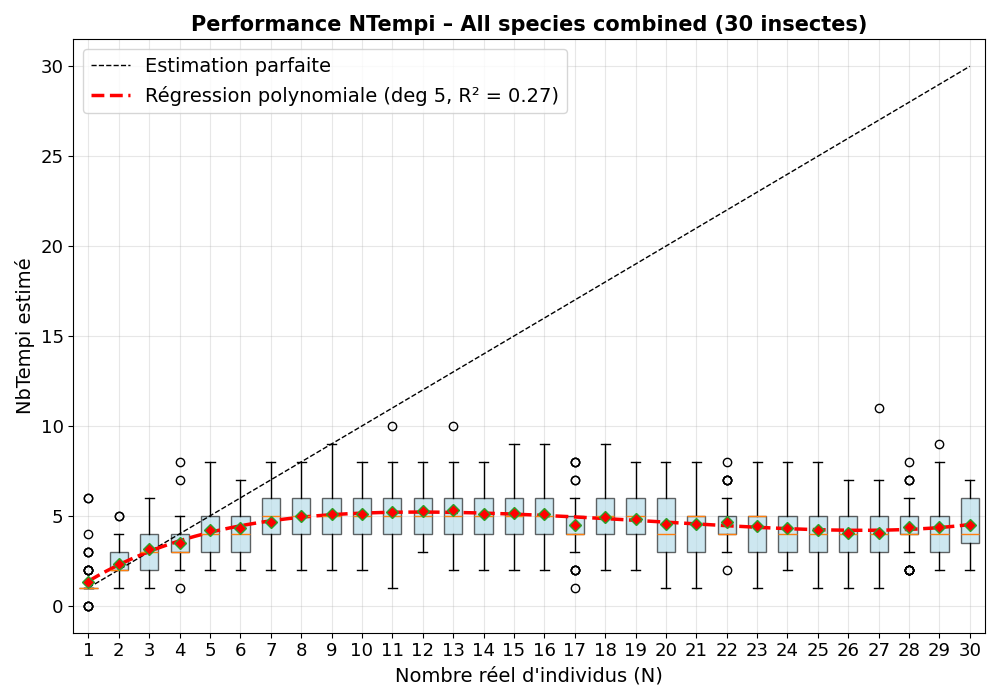
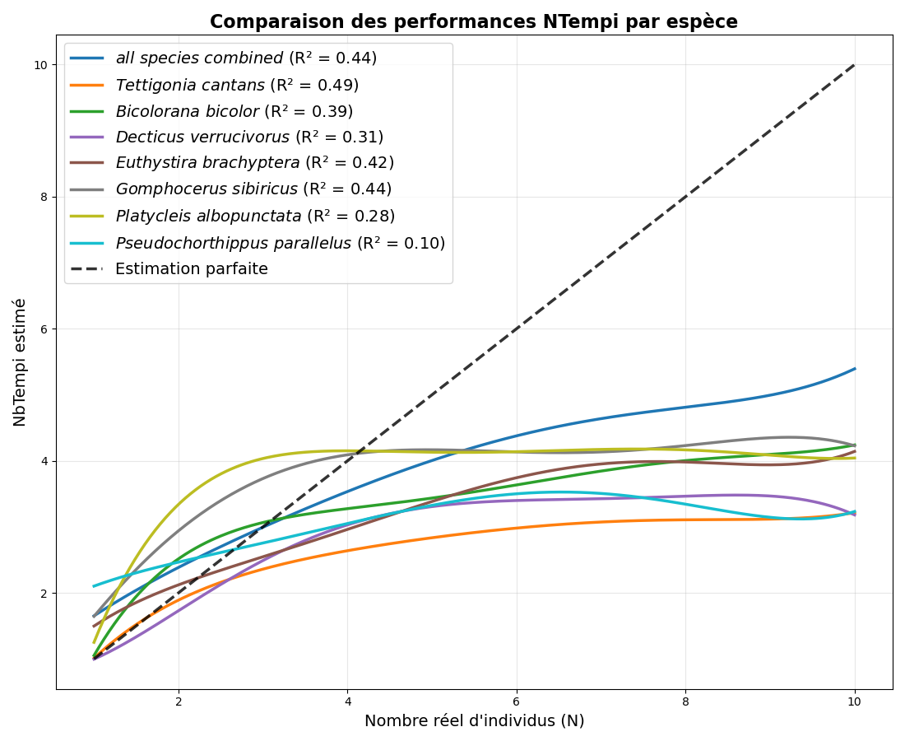
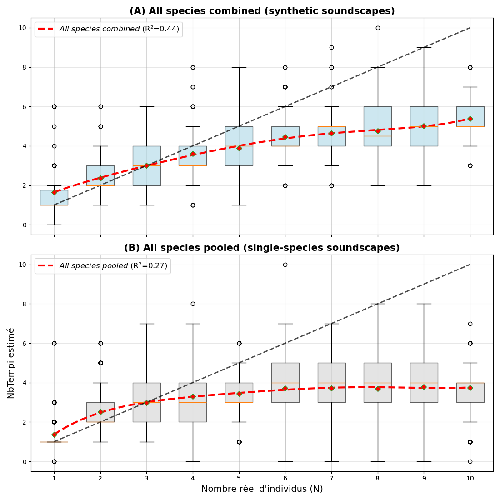
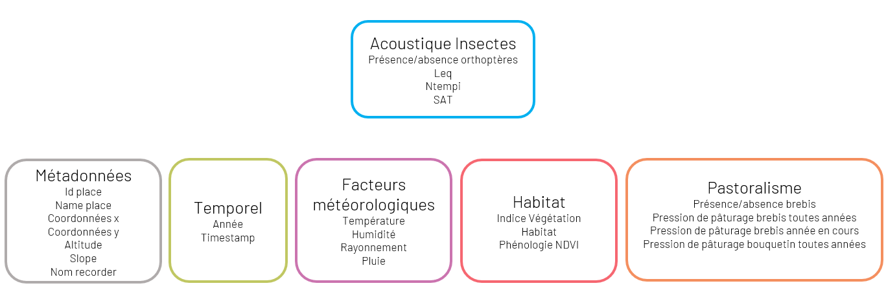
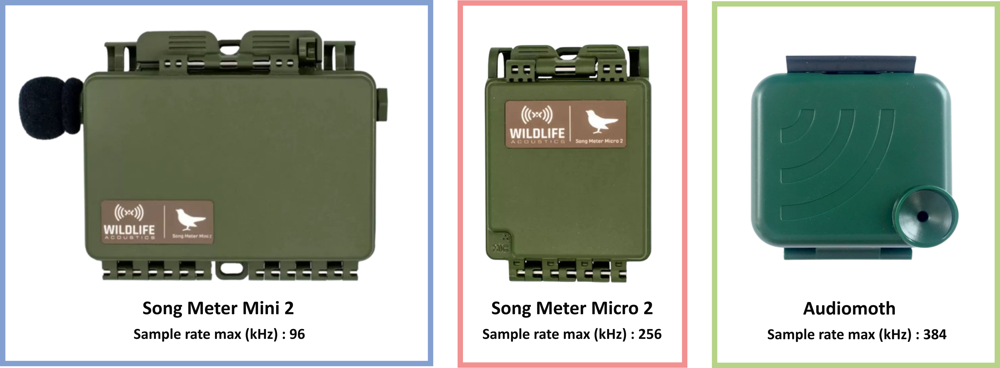

Make this Notebook Trusted to load map: File -> Trust Notebook
Cadre méthodologique et contexte environnemental
Déploiement des enregistreurs
Durant l’été 2025, 32 enregistreurs de type audiomoth ont été posé dans la RNCFS de Belledonne. Leur emplacement est visible sur la carte ci-dessous.
Cette carte montre la localisation des enregistreurs acoustiques déployés en 2025. Cliquer sur un point por avoir le nom de l’enregistreur associé.
Les enregistreurs ont été posés mi-juin 2025 avant l’arrivée du troupeau de brebis de l’âne. Deux maintenances ont été effectuées durant l’été et la récupération s’est faite début-octobre. Sur la figure 2, le début et la fin d’enregistrement de chaque audiomoth.
---
config:
logLevel: 'debug'
theme: 'neutral'
---
timeline
title Timeline des maintenances terrain
16 juin : Pose
21 juillet : Maintenance 1
19 août : Maintenance 2
2 octobre : Récupération
NotePériodes de fonctionnement des enregistreurs AudioMoth
Météo
La figure 3 nous montre les précipitations et la température relevés par la station météo de l’âne. Une courbe fine toutes les 10 minutes est disponible ainsi qu’une variation journalière.
Précipitation et température relevé par la station metéo de Belledonne
Pluie
NoteDétection automatique de pluie par analyse audio via trasfert learning
Détection automatique de pluie par analyse audio
Approche méthodologique Nous avons developpé un modèle de classification automatique pour la détection de pluie dans des enregistrements audio (sur audiomoth). Le modèle s’appuie sur l’architecture Audio Spectrogram Transformer (AST), un réseau de neurones de type Vision Transformer adapté aux spectrogrammes audio, pré-entraîné sur AudioSet (2 millions d’échantillons) (Framework : PyTorch + HuggingFace Transformers). Ce modèle est choisi pour ses performances dans l’état de l’art en classification audio et son tranfert learning facile et efficace. Les enregistrements audio bruts (1 minute, 96 kHz) sont d’abord rééchantillonnés à 16 kHz puis segmentés en extraits de 10 secondes avant d’être convertis en spectrogrammes de dimensions 1024×128, format d’entrée du modèle via
AutoFeatureExtractor (HuggingFace).Construction du dataset et entraînement Le dataset d’entraînement a été construit à partir de 1885 fichiers audio (944 “Dry” et 941 “Rain”) vérifiés manuellement (spectrogramme + audio) (
creation_dataset_pluie.py+dataset_rain_verif.py). Le dataset est ici:G:\Insect_Belledonne_2025\dataset_rain. La segmentation en extraits de 10 secondes a permis d’obtenir 11 213 segments parfaitement équilibrés (50.2% Dry / 49.8% Rain), augmentant ainsi la taille du dataset d’un facteur 6. Les features extraites sont enregistrées ici:\Meteo+vegetation\Meteo+dataframe\dataset_balanced_10secavec le codepreprocess_balanceddata.py. Ce dataset a ensuite été divisé en ensemble d’entraînement (8970 segments, 80%) et de validation (2243 segments, 20%) de manière stratifiée pour maintenir l’équilibre des classes. Le fine-tuning du modèle a été effectué en deux phases : une première phase de validation rapide sur un subset de 1000 échantillons (accuracy 93.0%, F1 92.5%) pour tester l’architecture (script:train_balanced.py; modèle enregistré :ast_balanced_clean_final), suivie d’un fine-tuning complet sur l’ensemble des données avec des hyperparamètres optimisés (learning rate 5e-6, batch size 16, epoch 3, early stopping) (script :train_balanced_full.py;modèle enregistré :ast_final_full_20260204_1542). Les performances sur le dataset de validation équilibré ont une accuracy de 95.5%, une precision de 96.4%, un recall de 94.5% et un F1-score de 95.4%.Validation terrain et optimisation La validation en conditions réelles a été réalisée sur le site AM02 avec 570 fichiers audio annotés manuellement (ground truth). Ce dataset de test, sélectionné sur le critère que la station météorologique ou le modèle AST détectait de la pluie, présentait un déséquilibre naturel enrichi en événements pluvieux. Avec le seuil de classification par défaut (0.45), le modèle AST démontre un recall de 95.1% (détection de la quasi-totalité des événements pluvieux) mais une precision limitée à 65.0%, résultant en 158 faux positifs (script :
predict_rain_AST_optim.py). Cette configuration privilégie la détection maximale au détriment de la fiabilité. Une analyse systématique de 200 seuils de décision (0.00 à 1.00) a été faite pour optimiser le compromis precision-recall. Le seuil optimal identifié à 0.94 permet d’atteindre une precision de 90.5% tout en maintenant un recall de 83.8%, soit une amélioration du F1-score de 9.8 points (87.0% vs 77.2%). La comparaison avec la station météorologique révèle des performances globalement comparables en accuracy (69.5-69.6%) mais le modèle AST avec seuil optimisé surpasse significativement la station en precision (+21.9%) tout en maintenant un F1-score supérieur (87.0% vs 74.0%).
Performances synthétiques
| Phase | Dataset | Samples | Accuracy | Precision | Recall | F1 | Contexte |
|---|---|---|---|---|---|---|---|
| transfert learning 1; Validation rapide | Subset équilibré | 200 | 93.0% | 95.5% | 91.5% | 92.5% | Test architecture |
| Fine-tuning | Dataset pluie : Complet équilibré | 2243 | 95.5% | 96.4% | 94.5% | 95.4% | Dataset validation |
| Terrain (seuil 0.45) | AM02 non équilibré | 570 | 69.6% | 65.0% | 95.1% | 77.2% | Seuil par défaut |
| Terrain (seuil 0.94) | AM02 non équilibré | 570 | ~77% | 90.5% | 83.8% | 87.0% | Configuration optimale |
| Station météo | AM02 non équilibré | 570 | 69.5% | 68.6% | 80.2% | 74.0% | Référence comparative |
Répartition de l’utilisation de l’espace des brebis et des bouquetins
NoteDétails méthodo chargement domestique et bouquetin
Bouquetins
Toutes les localisations GPS des bouquetins sur le site de Belledonne, de 2017 à 2025, ont été utilisées, mais seules celles comprises entre juin et octobre ont été conservées. Les données ont été filtrées spatialement pour ne retenir que les points situés dans la zone d’étude. Pour éviter la surreprésentation temporelle, un sous-échantillonnage a été appliqué, ne conservant qu’une localisation toutes les deux heures par individu. Ces coordonnées ont ensuite servi au calcul de la densité d’utilisation de l’espace (Kernel Density Estimation, KDE) avec la fonction kernelUD du package adehabitatHR. Un KDE global, intégrant tous les individus, a été généré avec une largeur de bande automatique (href) et une grille de résolution adaptée, produisant une surface continue représentant l’intensité d’utilisation de l’espace par les bouquetins. Nous avons en sortie deux map chargement et iso pour toutes les années combinées que pour juin à octobre mais également ces deux mêmes map pour l’année entière. Et nous avons donc un chargemnt en animal.day autour des capteurs acoustiques (rayon de 50m) dans etude_2026/chargement_bouquetin_jour_global.csv. (code Calcul_KDE_bouquetin.Rmd)
Brebis
Les données GPS des brebis ont été traitées afin de quantifier l’utilisation de l’espace et la présence des animaux autour des capteurs acoustiques.
Nettoyage des données : Les positions GPS situées hors de la zone d’étude ou présentant des erreurs de positionnement (dop > 5) ont été exclues. Les points impliquant des vitesses supérieures à 4 m/s ont également été retirés afin d’éliminer les anomalies liées au GPS.
Rééchantillonnage temporel : Les positions des colliers ont été rééchantillonnées à intervalles réguliers de 15 minutes. Pour chaque timestamp régulier, le point GPS le plus proche dans une fenêtre de ±5 minutes a été conservé et son temps ajusté au timestamp standard.
Calcul du barycentre quotidien : Pour chaque jour, la position moyenne du troupeau a été calculée à partir des colliers disponibles. Les coordonnées du barycentre (x_center, y_center) ainsi que l’écart-type des positions (x_sd, y_sd) ont été estimés, fournissant une mesure de la dispersion du troupeau. Les journées comportant moins de trois colliers ont été exclues pour garantir la fiabilité des estimations.
Trajectoires et rediscrétisation : La trajectoire quotidienne du barycentre a été représentée à l’aide d’objets ltraj du package adehabitatLT. Ces trajectoires ont ensuite été rediscrétisées à intervalles fixes de 15 minutes via la fonction redisltraj.
Quantification de l’espace utilisé (BBUD) : L’espace utilisé par le troupeau a été estimé à l’aide d’un Brownian Bridge Utilization Distribution (BBUD), calculé avec la fonction kernelbb du package adehabitatHR. Le paramètre sig1 a été estimé via la fonction liker et sig2 a été fixé à 25, correspondant à la précision GPS. Les résultats ont été convertis en raster représentant le nombre de brebis·jour par hectare, multiplié par l’effectif total du troupeau. Un seuil basé sur le 90ᵉ percentile a été appliqué pour éliminer les zones très peu utilisées.
Extraction autour des capteurs : Pour chaque année, le nombre de brebis·jour a été calculé dans un rayon de 50 m autour de chaque capteur acoustique (ici ceux de 2025) et enregistré dans le fichier chargement_brebis_jour_global_par_capteur_implementerwithyear.csv.
Présence instantanée autour des sites : La présence de brebis pour chaque intervalle de 15 minutes a été évaluée pour 2023 et 2025. Une matrice binaire a été construite indiquant, pour chaque site et chaque timestamp, si au moins une brebis se trouvait à moins de 50 m du capteur. La méthode repose sur l’estimation de la dispersion du troupeau à chaque instant. À partir du barycentre et des écarts-types en X et Y, un rayon de diffusion du troupeau est calculé (racine carrée de la somme des carrés des écarts-types), servant à définir la zone de couverture autour du barycentre.
Ce rayon de diffusion est ajouté à chaque point de trajectoire et des règles spécifiques sont appliquées pour les périodes nocturnes (19 h–4 h) et pour les valeurs manquantes : les points nocturnes se voient attribuer un rayon fixe, tandis que les autres valeurs manquantes sont complétées par la dernière valeur connue. Une matrice de distances est ensuite calculée entre tous les points et tous les sites, et la présence du troupeau est déterminée en comparant cette distance avec le rayon effectif du site (50 m + rayon de diffusion). Le résultat est une matrice binaire indiquant la présence ou l’absence du troupeau pour chaque intervalle de 15 minutes et chaque site. Les résultats sont enregistrés dans presence_parfichier15minutes_parcapteur_2025.csv et cumulés par jour dans presencecumule_parjouretsite_2025.csv.
Utilization Distribution journalier : Pour chaque journée, le BBUD a été calculé et les valeurs extraites pour chaque capteur. Les cartes quotidiennes ont été enregistrées au format PNG, et les résultats journaliers sont sauvegardés dans chargement_brebis_jour_par_jour_et_capteur_2025.csv.
Organisation du code : Le script propre pour 2025 est disponible dans propre_2025_Calcul_UD_centre_brebis2025.Rmd. Pour le cumul de toutes les années et la moyenne des rasters annuels, le code est dans domestique_all_year.Rmd, avec les résultats stockés par année dans chargement_brebis_jour_global_par_capteur_implementerwithyear.csv.
Chargement des brebis en cumulé sur les années 2018 à 2025

|

|
Chargement des bouquetins en cumulé sur les années 2017 à 2025 (uniquement sur les mois de juin à octobre)

|

|
Zoom sur la répartition de l’utilisation de l’espace des brebis pour chaque année
chargement :
|
iso_UD :
|
Déplacez le curseur pour visualiser le chargement annuel.
2025 :
|
2023 :
|
Déplacez le curseur pour visualiser le chargement journalier.
Ci-dessous le graphique de présence des brebis sur site des enregistreurs acoustiques (2025)

Graphique de la présence de brebis sur un rayon de 50m autour des enregistreurs acoustiques.
Paysages sonores enregistrés
Leq
La figure 5 montre l’évolution du Leq (entre 6 et 44 kHz) associée à celle de la météo
Evolution du LEq - disponible pour 3 périodes avec choix du ou des enregistreurs souhaités – Fenêtres temporelles & météo synchronisées. Le choix des courbes visibles est dynamique; il suffit de cliquer deux fois sur un enregistreur pour n’afficher que sa courbe et passer tous les autres en invisible. On peut additionner ensuite autant de courbe qu’on le veut en cliquant sur les courbes que l’on souhaite ajouter.
Une autre visualisation en heatmap est disponible sur la figure 6. Avec coloration en mauve pour insecte et en vert pour la pluie (pour le moment les données proviennent de la station météo)
Photo de la map avec différents affichages
Les insectes présents dans la RNCFS
Une liste de 20 espèces d’orthoptères ont été recensées lors du relevé réalisé sur la RNCFS de Belledonne en 2024.
Photo
Espèce
Audio
Oscillogramme

Anonconotus alpinus (Analote des Alpes)


Antaxius pedestris (Antaxie marbrée)
Ralenti ×1,6


Arcyptera fusca (Arcyptère bariolée)


Bicolorana bicolor (Decticelle bicolore)


Chorthippus apricarius (Criquet des adrets)


Decticus verrucivorus (Dectique verrucivore)


Euthystira brachyptera (Criquet des Genévriers)


Gomphocerus sibiricus (Gomphocère Popeye)


Oedipoda germanica (OEdipode rouge)


Omocestus haemorrhoidalis (Criquet rouge-queue)


Platycleis albopunctata (Decticelle chagrinée)


Pseudochorthippus parallelus (Criquet des pâtures)


Psophus stridulus (OEdipode stridulante)


Stauroderus scalaris (Criquet jacasseur)


Stenobothrus lineatus(Sténobothre commun)


Stenobothrus nigromaculatus (Sténobothre bourdonneur)


Tettigonia cantans (Sauterelle cymbalière)


Tetrix depressa (Tétrix déprimé)

Gomphocerippus biguttulus (Criquet mélodieux)


Podisma pedestris (Miramelle des moraines)

Liste des 20 espèces présentent sur notre site d’étude associé à leur chant et leur oscillogramme.
NTempi
Création de soundscapes de synthèse
Pour analyser les performances de l’indice Ntempi, nous avons créé des soundscapes de synthèses avec des nombres connues d’individus à partir de la liste des espèces présentes ci-dessus. L’objectif est de simuler des conditions d’écoute réalistes où plusieurs individus chantent simultanément à des distances variables. Pour cela, il était nécessaire de disposer d’une base de données d’enregistrements d’insectes. Nous avons téléchargé, via la plateforme ECOSoundSet, une base de données regroupant l’ensemble des espèces d’insectes recensées lors du relevé orthoptères réalisé sur la RNCFS de Belledonne en 2024.
- Synthèse d’un soundscape avec 5 individus.

- Synthèse d’un soundscape avec 10 individus.

- Synthèse d’un soundscape avec 15 individus.

NoteDétails methodo pour la création de soundscapes de synthèse
Téléchargement de la base de données d’audio insectes
Pour telecharger une base de données d’enregistrement d’orthoptères, nous avosn utilisé la plateforme ECOSoundSet qui regroupe plusieurs bases de données. Nous nous sommes donc restreint à la liste des 20 insectes relevés dans la RNCFS.
Un premier tri a ensuite été appliqué aux enregistrements : les fichiers présentant une fréquence d’échantillonnage inférieure à 96 kHz ainsi que ceux d’une durée inférieure à 30 secondes ont été exclus. Les enregistrements restants ont ensuite été analysés une première fois à l’aide de NTempi, afin de ne conserver que ceux présentant une valeur de NTempi égale à 1.
| Insectes relevés sur la RNCFS en 2024 | Nombres d’enregistrements téléchargés | Nombres d’enregistrements utilisés |
|---|---|---|
| Anonconotus alpinus | 27 | 4 |
| Antaxius pedestris | 89 | 2 |
| Arcyptera fusca | 60 | 1 |
| Bicolorana bicolor | 231 | 13 |
| Chorthippus apricarius | 191 | 0 |
| Decticus verrucivorus | 282 | 28 |
| Euthystira brachyptera | 57 | 14 |
| Gomphocerus sibiricus | 65 | 11 |
| Oedipoda germanica | 1 | 0 |
| Omocestus haemorrhoidali | 44 | 2 |
| Platycleis albopunctata | 304 | 55 |
| Pseudochorthippus parallelus | 309 | 11 |
| Psophus stridulus | 35 | 0 |
| Stauroderus scalaris | 106 | 3 |
| Stenobothrus lineatus | 136 | 5 |
| Stenobothrus nigromaculatus | 49 | 2 |
| Tettigonia cantans | 347 | 12 |
| Tetrix depressa | 0 | 0 |
| Gomphocerippus biguttulus | 0 | 0 |
| Podisma pedestris | 0 | 0 |
Prétraitement des fichiers audio individuels
Pour chaque espèce, un pool d’enregistrements valides est constitué à partir des fichiers disponibles. Seuls les fichiers dont la fréquence d’échantillonnage d’origine est supérieure ou égale à 96 kHz sont conservés, afin d’éviter toute dégradation spectrale liée au rééchantillonnage. Ce pool sert de base au tirage aléatoire des signaux lors de la génération des soundscapes. Sur chaque enregistrement est esnuite appliqué un filtre passe-haut de type Butterworth (ordre 4) avec une fréquence de coupure fixée à 6 kHz. Tous les enregistrements sont ensuite tronqués ou complétés par ajout de zéros afin d’atteindre une durée fixe de 30 secondes. Une normalisation énergétique est appliquée par ajustement du niveau RMS, chaque signal étant mis à un RMS cible identique, afin de garantir une contribution moyenne comparable de chaque individu lors du mélange.
Sélection et mélange des signaux
Chaque soundscape est généré indépendamment. Le nombre total d’individus présents est tiré aléatoirement suivant une loi uniforme entre 1 et 30 insectes. Les espèces présentes dans le soundscape sont ensuite sélectionnées aléatoirement parmi celles disponibles, sans répétition, dans la limite du nombre total d’individus. Le nombre d’individus est réparti aussi équitablement que possible entre les espèces sélectionnées. Lorsque le nombre total d’individus n’est pas divisible par le nombre d’espèces, les individus restants sont distribués de manière uniforme entre les premières espèces sélectionnées. Pour chaque espèce, les fichiers audio correspondants sont tirés aléatoirement dans le pool disponible. Le tirage est effectué sans remplacement lorsque le nombre de fichiers le permet, et avec remplacement dans le cas contraire. Les signaux individuels prétraités sont sommés pour produire le soundscape composite. Une protection anti-saturation est appliquée après le mélange afin d’éviter tout écrêtage, en normalisant le signal global si nécessaire.
Un bruit blanc additif est ensuite généré et ajouté au soundscape selon un rapport signal-bruit (SNR) fixé, ici à 30 dB. Le bruit est calibré à partir du RMS du signal composite afin de garantir un SNR effectif constant entre les soundscapes.
Evaluation de Ntempi avec des soundscapes de synthèse
Test paramètriques de NTempi
Création de 800 soundscapes avec entre 1 et 30 insectes. Les paramètres de NTempi ont été optimisés et finalement bloqués sur les paramètres ci-dessous.
NoteChoix des paramètres de Ntempi
- Séparation spectrale (identification des bandes fréquentielles)
- bsize = 5000 Hz : Largeur des bandes fréquentielles.
- t = 5×10⁻¹¹ : Seuil de détection des pics spectraux.
- Novelty curve (détection des événements temporels)
- Q = 0.6 : Quantile de discrétisation. ↓ = garde plus d’événements (sensible au bruit), ↑ = plus sélectif
- gamma = 10 : Compression logarithmique du spectrogramme
- Calcul du temprum (extraction des périodicités)
- Na = Fs0/H0*k : Taille de fenêtre FFT. Détermine la résolution temporelle : résolution = (Fs/H/Na)×60
- BPMTheta = (100, 6100) BPM : Plage de tempos biologiquement plausibles
- Détection de tempos (identification des pics et filtrage)
- thresh = 0.28 : Seuil d’amplitude absolu dans le temprum. ↓ = détecte plus de tempos
- prom_c = 0.33 : Proéminence relative (fraction du pic max). ↓ = détecte pics faibles, ↑ = seulement pics dominants
- eps = 60 BPM : Marge pour la détection d’harmoniques (ex: 100 et 200±eps BPM). ↓ = strict
- delta = 60 BPM : Marge pour fusionner tempos similaires entre bandes. ↓ = sépare variations fines, ↑ = fusionne variations d’un même individu

Analyse de NTempi sur les soundscapes de synthèse
Formules des métriques : \[ \mathrm{MAE} = \frac{1}{N} \sum_{i=1}^{N} \left| N_{\text{réel}, i} - N_{\text{Tempi}, i} \right| \]
\[ \mathrm{RMSE} = \sqrt{ \frac{1}{N} \sum_{i=1}^{N} \left( N_{\text{réel}, i} - N_{\text{Tempi}, i} \right)^2 } \]
\[ \mathrm{Biais} = \frac{1}{N} \sum_{i=1}^{N} \left( N_{\text{réel}, i} - N_{\text{Tempi}, i} \right) \]
NoteAnalyse complémentaire de Ntempi
Analyse de Ntempi pour des soundscapes créés uniquement à partir d’enregistrement d’une unique espèce vs toutes les espèces combinés.
Des soundscapes combinant 1 à 10 individus ont été créés avec des enregistrements provenant de la même espèce et la performance de Ntempi analysée en comparaison avec des soundscapes créé en combinant plusieurs espèces.
Comparaison des performances Ntempi par espèce

Distribution de NTempi pour des soundscapes créé avec une unique espèce et en combiant les espèces.
L’analyse faite montre que la variation des tempos intra-espèces est pour certaine beaucoup plus faible que pour d’autres. Par exemple, pour l’espèce Platycleis albopunctata qui ressemble fortement à celle sur des soundscapes créés avec des espèces différentes, la variabilité des tempos est grande (exemple de tempos relevés pour un soundscape de 10 insectes avec étude préalables sur individu séparé : 180,180,1082,1143,1263,180,721,601,180,721 L’étude sur Decticus verrucivorus semble différente, il arrive à moins bien séparé les insectes et nous arrivons à un plateau de maximum 3 insectes, et effectivement la variabilité des Tempos est plus faible : 541,360,300,541,601,601,541,601,541
Effet du SNR
5 combinaisons de 3 insectes sont utilisés : pour chaqune d’entres elles, 10 soundscapes sont crées avec un SNR variables. On observe une stabilité forte du Ntempi malgré un SNR plus mauvais

Performance de Ntempi sur les soundscapes de synthèses avec un pool de 15 espèces.
Effet du décalage temporelle
Une combinaison de 4 insectes est choisies, nous allons tester le décalage des fichiers. le soundscape créé par ces 4 insectes donne volontairement NTempi=2. Nous appliquerons un decalage sequentiel de chaque fichier : 50 soundscapes avec décalages progressifs : Décalage entre fichiers : 10 ms (0.01s). Nous avons choisis le décalage pour etre le plus petit possible du tempo géré par NTempi.
Le resultat est similaire pour les 50 soundscapes. Ntempi=2.
Ntempi sur nos enregistrements réels
Les enregistrements sont préalablement filtrés pour atténuer le bruit de fond.
Un filtre coupe-bande est appliqué avec une fréquence de coupure de 6000Hz puis un filtrage du bruit stationnaire est appliqué entre 6000 et 48000Hz. La méthode retenue est le lissage gaussien 2D (avec la fonction remove_background de scikit maad). Application d’un filtre gaussien bidimensionnel sur le spectrogramme pour estimer le bruit de fond, puis soustraction spectrale - Filtrage simultané dans les dimensions temporelle et fréquentielle. D’autres filtres ont été testé dont un particulèrement : remove_background_along_axis dont le principe est le calcul du profil de bruit médian pour chaque fréquence sur toute la durée de l’enregistrement, puis soustraction - Filtrage unidimensionnel le long de l’axe fréquentiel. Ce filtrage très efficace est trop fort et efface beaucoup de nos bruits d’insectes.
NoteNtempi non lissé
2025
2023
Distribution de Ntempi par rapport au Leq (avec coloration en fonction de la saturation.

NoteRécapitulatif des scripts utilisés et emplacements (pour Margaux)
Tous les scripts sont développés dans l’environnement virtuel ntempi (sous le projet NTempi-dev) et sont sauvegardés ici : C:\Users\tm105667\NTempi-dev
Création des soundscapes de synthèses Tous les enregistrements originaux non triés provenant de ECOSounSet sont ici
postdoc/Belledonne/relevé ortho/Insect extract/Insect extract/Online recordings, il ont subit un premier triage et transformation viaverification_visu.pyavec transformation en mono, on ne garde que les Fs>96khz et tous sont rééchantillonnées à 96kHz et on ne garde que les enregistrements de plus de 30secondes. Ce dossier sortantrecording_trier_96_10sec_monoest passé sousNtempi_soundscape_withdenoising(sans application du denoising) puis une copie de tous les fichiers ntempi 1 (sup 96kHz) est faite dans le dossierrecordings_trier_Ntempi. Le script permettant la création de soundscapesNTempi-dev/creation_soundscapes_insecteprend comme source ce dossierrecordings_trier_Ntempi. Il créé le nombre de soundscape voulu avec les espèces selectionnés. Dans ce même script se trouve le script pour l’évaluation de l’impact du SNR sur la performance de NTempi, ainsi que celui pour l’effet du décalage temporel entre fichier audio.Evaluation de Ntempi L’évaluation de NTempi se fait sur
Ntempi_soundscape_withdenoising, un denoising est possible sur selection viasound.remove_backgrounddescikit maad. Les paramètres de NTempi sont fixés Fs0 = 96000 ; N0, H0 = 2048, 512; tlen0 = 5; t0 = 5e-11; win0 = 40; bsize0 = 1500; g0 = 10; win1 = 10; Q0 = 0.6; Fs_feat0 = Fs0/H0; k = 1; Na0 = int(Fs_feat0*k); Theta0 = (100, 6100); t1 = 0.30; prom_c0 = 1/3; eps0, delta0 = 60, 60. Seul T1 varie très légérement entre l’évaluation des soundcapes de synthèses (t1 = 0.28) et les soundscape terrain (t1 = 0.30).Analyse de Ntempi Une partie de l’analyse post-traitement Ntempi des soundscapes de synthèse est dans
NTempi_soundscape.py, avec graphique pour évalution réél/prédit, et l’analyse SNR et décalage temporel. Une autre partie est dansanalyse_posttraitement_synthese.pyavec les analyses finales avec évaluation Ntempi pour des soundscape créés avec espèce unique. La table qui compile Leq, SAT et NTempi pour quarto s’est faite viacreation_table_pour_quarto.
Composition du dataframe final

Activité.
- Métadonnées
| Variables | Distribution valeurs | Description |
|---|---|---|
| id_place | 1 par placette | Numéro de placette (1 à 32 pour 2025 et on en a 11 pour 2023 (avec correspondances 2023/2025) |
| name_place | 1 par placette | Nom explicite des placettes en fonction de leur emplacement sur la réserve |
| coord_x | 1 par placette | Coordonnées x |
| coord_y | 1 par placette | Coordonnées y |
| altitude | 1 par placette | Altitude |
| slope_s2m | 1 par placette | Pente |
| recorder | 1 par placette et par année |
Nom de l’enregistreur déposé |
- Facteurs temporels
| Variables | Distribution valeurs | Description |
|---|---|---|
| year | 1 par placette | Année |
| datetime_local | 1 par horodatage (et placette) | date en format 2025-06-18 00:00:00+02:00 (heure locale) |
| datetime_UTC | 1 par horadatage (et placette) | date en format 2025-06-18 00:00:00+00:00 (heure UTC) |
- Acoustique insectes
| Variables | Distribution valeurs | Description |
|---|---|---|
| SAT | 1 par horodatage (et placette) | Pourcentage de saturation de l’enregistrement (existe saturation vent et saturation insectes) |
| Presence_insect | 1 par horodatage (et placette) | Présence ou absence d’orthoptères via ML (entrainement d’un CNN avec mel-spectrogramme sur 1 minute et ajustement du seuil) |
| Leq | 1 par horodatage (et placette) | niveau de pression acoustique continu (entre 6 et 46 kHz) - attention le Leq prend aussi en compte le bruit de fond, la pluie, le vent, les moutons… |
| SNR | 1 par horodatage (et placette) | niveau de signal sur bruit (entre 6 et 46 kHz) - SNR < 5 dB → activité faible / bruit dominant - > 15 dB → forte activité ou individus proches - - attention le SNR prend aussi en compte la pluie, le vent, les moutons… |
| NTempi | 1 par horodatage (et placette) | Comptage orthoptères |
| NTempi_satremove | 1 par horodatage (et placette) | NTempi avec mise en NaN pour fichiers avec une saturation >40 par les insectes |
| NTempi_SATmax | 1 par horodatage (et placette) | NTempi avec mise à valeur max de NTempi (par placette) pour fichiers avec une saturation >40 par les insectes |
- Facteurs météorologiques
| Variables | Distribution valeurs | Description |
|---|---|---|
| temperature_s2m | 1 par horodatage (et placette) | Température via modèle s2m |
| radiation_direct_s2m | 1 par horodatage (et placette) | Radiation via modèle s2m |
| humidity_s2m | 1 par horodatage (et placette) | Humidité via modèle s2m |
| radiation_model_emilie | 1 par horodatage (et placette) | Radiation via modèle Emilie |
| temperature_station_cor | 1 par horodatage (et placette) | Température via station Ane avec ajustement des écarts relatif entre placettes via modèle opemM |
| radiation_station_cor | 1 par horodatage (et placette) | Radiation via station Ane avec ajustement des écarts relatif entre placettes via modèle opemM |
| humidity_station | 1 par horodatage | Humidité via station Ane |
| temperature_audiomoth | 1 par horodatage (et placette) | Température relevé par les audiomoths (température biaisée par radiation sur boitier) |
| rain_s2m | 1 par horodatage (et placette) | Relevé pluie via modèle s2m |
| Rain_prediction_new | 1 par horodatage (et placette) | Présence ou absense pluie via modèle ML sur enregistremet audio (AST pré-entraîné + fine-tuning sur spectrogrammes 10 s, avec optimisation du seuil de classification. |
- Habitat
| Variables | Distribution valeurs | Description |
|---|---|---|
| Iveg | 1 par placette | Indice de couverture végétale : Iveg=(HERB+0.5×LAND)/100 . Triés du plus herbacé → lande → minéral). A partir du relevé de Cédric Jacquier en 2025 |
| Habitat | 1 par placette | 0 pour Prairie thermophile à fétuque paniculée; 1 pour Pelouse oligotrophe à nard (et dicotylédones) ; 2 pour Prairie eutrophe et hyperpiétinée à Rumex. (à partir du relevé de Cédric Jacquier) |
| NDVI | 1 par horadatage (et placette) | Phénologie de NDVI (associé à son code de qualité) |
| quality_flag | 1 par horadatage (et placette) | Code de qualité du NDVI |
- Pression pastorale
| Variables | Distribution valeurs | Description |
|---|---|---|
| bouq_global | 1 par placette | chargemnt en bouquetins.jour (via KDE) autour des capteurs acoustiques (rayon de 50m). Chargement calculé à partir des GPS de toutes les années 2017 à 2025 |
| chargement_dom_ global_allyear |
1 par placette | Chargement brebis·jour (via BBUD) calculé dans un rayon de 50 m autour de chaque capteur acoustique. Chargement calculé à partir des GPS de toutes les années 2018 à 2025 |
| chargement_dom_ global |
1 par placette et par année | Chargement brebis·jour (via BBUD) calculé dans un rayon de 50 m autour de chaque capteur acoustique. Chargement calculé à partir des GPS de l’année concerné |
| chargement_dom_jour | 1 par jour (et placette) | Chargement brebis·jour (via BBUD) calculé dans un rayon de 50 m autour de chaque capteur acoustique par jour |
| presence_dom_15 | 1 par horodatage (et placette) | la présence ou l’absence du troupeau pour chaque intervalle de 15 minutes et chaque site. Une matrice de distances est calculée entre tous les points brebis et tous les sites, et la présence du troupeau est déterminée en comparant cette distance avec le rayon effectif du site (50 m + rayon de diffusion du troupeau) |
| presence_dom_jour_cum | 1 par jour (et placette) | Présence du troupeau sur site cumulé par jour |
Enregistreurs autonomes
Mise au point sur les audiomoths
Au 25 mars 2026, 40 audiomoths sont disponibles pour la prochaine campagne. Les 40 audiomoths ont été testés en chambre anéchoïque. Ils sont positionnées l’un après l’autre dans une pince en face du haut-parleur haute-fréquences Avisoft Vifa. Pour chacun d’entre eux, un bruit blanc et un sweep linéaire sont enregistrés.
2026
2025
Etude sur 3 types de d’enregistreurs autonomes
SNR

Directivité des 3 types d’enregistreurs autonomes
Directivité
Directivité des 3 types d’enregistreurs autonomes
Les oiseaux
Etude birdnet sur les oiseaux de 2025
Le modèle Birnet a été passé sur l’ensemble des enregsitrements de 2025, le liste d’espèces a été restreinte à la liste fournit par F. Boca de 135 espèces d’oiseaux. Les espèces, Lesser Spotted Woodpecker, Zitting Cisticola, Long-tailed Tit, Tawny Owl ont été sortis de l’étude. Les seuils n’ont pas été fixés par espèce dans le but de viser présence/absence d’oiseaux et non les espèces

Comparaison de la directivité des 3 types d’enregistreurs à différentes fréquences.

Activité.

Régression logistique sur 4 variables.